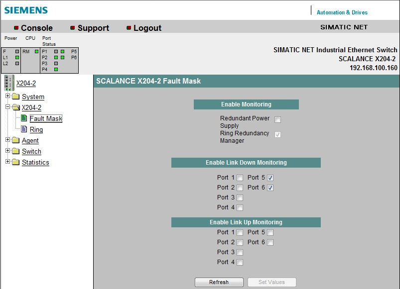
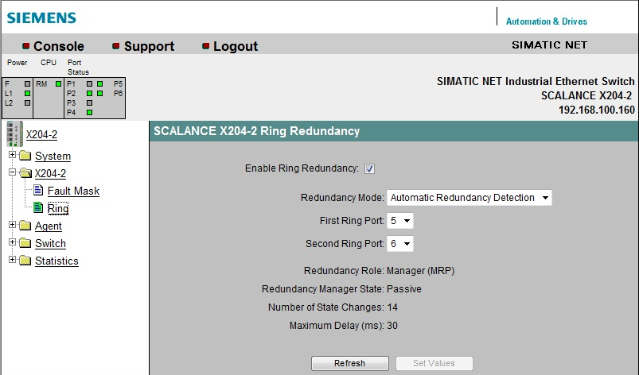

Scalance X204-2 Ethernet Switch
Scalance X204-2 Installation and Setup Guidelines
Install and setup the Scalance X204-2 switch unit following the instructions provided in the related documentation.
You can easily program the switch settings over a Web browser (Web-based Management) once an Ethernet connection to the switch is established.
This section does not cover the entire setting procedure; it only illustrates the steps required to enable the redundant and fault-monitored fiber network configuration (Class X).
The following two setting pages are involved, both in the X204-2 folder. Namely:
- The Fault Mask page, to enable the link down monitoring
- The Ring page, to enable the redundancy on the fiber lines
Fault Mask Page: Enabling Link Down Monitoring
In the Fault Mask page, select Enable Link Down Monitoring for port 5 and 6 (fiber ports) to generate a notification when a fault is detected on either line.

Ring Page: Enabling Redundancy
In the Ring page, select Enable Ring Redundancy, and in the Redundancy Mode drop-down list, select Automatic Redundancy Detection, and then set Ring Ports on ports 5 and 6 (fiber ports) , as illustrated in the following image.
